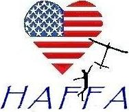
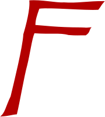

Building the HAFFA Logo¶
The HAFFA logo was originally drawn up by Diane Basta and scanned to provide an image file. That image file has been in use for a long time, appearing on club hats, tee-shirts nd the club website. However, scaling thta logo up for use on banners, or incorporating it in a badge for use on models or membership cards has not been practical.

In this note, we will construct an SVG file that can provide the missing functionality. We will use a Python Jupyter notebook so you can see how this new logo is being generated from the original club logo.
Logo Components¶
The original logo has five basic elements:
The US Flag
A heart shape mask used to cut off parts of the flag
A Modeler launching an airplane
A free-flight model
The text “HAFFA” styled in what looks like the papyrus font
Tracing the image file¶
I started off by using Snagit to crop off the modeler, airplane and HAFFA text from the image file. The flag and heart are well defined, so there was no need to attempt to process those parts of the logo. I broke up the text into the three letters used so each could be processed individually.
Ouce I had isolated those components, I used Inkscape to trace the parts, producing a rough SVG version of each item. The resulting vector form of each component was very messy, since the resolution of the images used was fairly low.
I then manually edited the imaged using Inkscape, deleting many of the generated points to smooth up the final SVG for each item. Here are the component files I produced:
Pilot:¶

When looking at this rsult in isolation, there are a few concerns. The head is a bit odd, and the legs are a bit out of line. at small scales, this is not very noticable, but in larger sizes we may need ot tweak things a bit. ### Airplane:

The airplane is not too bad, although the dihedral is not even on both sides. Minor tweaks can fix this.
Letter H:¶

These leters still have a hand-drawn feel that may be fine for the final logo. This might be. club-vote issue. ### Letter A:

Letter F:¶

Create a Basic SVG file¶
SVG is a text format, based on XML, which uses “tags” to identify each fundamental component og an image. You will not need to study this in detail to follow this note. We could just type up the svg file directly, but there are many calculations needed to come up with coordinate values we will need to placing the components of the logo, so I decided to generate the logo file using Python.
Assuming that you have a machine with Python installed, you will need to install the drawSVG package using the standard python pip tool if you want to follow along with this process.
Let’s make sure we have the required setup with a simple test.
[1]:
import drawSvg
If you see no errors, things are ready to go.
Next, we need to define the drawing area we will be using to create this logo. SVG uses two concepts to control how images are displayed. First, there is a user coordinate system, which traditionally maps to pixels on a computer screen. The physical size of the image depends on the resolution of the display you use to view the final image, so we assume it is just a dimensionless integer numbe3r that ranges from zero to some value in each direction. Normally, SVG sets up a coordinate system that is a bit odd to most humans. the x coordinate runs from zero at the left side of the image to some number at the right of the image. The y coordinate starts at zero at the top of the image, and runs down to some value. Fortunately, we specify the size of the drawing area in user coordinates using a width and 88height** parameter.
We will set up a standard US letter paper drawing area that is 8.5” by 11” for our “canvas” Remember that most printers will not be able to reach the edges of this page if you try to print something that is on the actual page edges, so the actual drawing will need to leave margins. We will use 0.5” for this margin value.
[2]:
import drawSvg as draw
d = draw.Drawing(850, 1100, displayInline=False)
# Draw an irregular polygon
d.append(draw.Lines(0, 0,
100, 0,
100, 100,
0, 100,
close=True,
fill='#eeee00',
stroke='black'))
We could display this directly, but looking at the generated SVG will be handy for debugging the work we are going to do.
Here is how we generate an SVG file from this test code”
[3]:
d.saveSvg("_images/test1.svg")
We can create a simple python function to display our SVG files.
[4]:
def show(filename):
with open('_images/%s' % filename) as fin:
lines = fin.readlines()
for l in lines:
print(l.rstrip())
[5]:
show("test1.svg")
<?xml version="1.0" encoding="UTF-8"?>
<svg xmlns="http://www.w3.org/2000/svg" xmlns:xlink="http://www.w3.org/1999/xlink"
width="850" height="1100" viewBox="0 -1100 850 1100">
<defs>
</defs>
<path d="M0,0 L100,0 L100,-100 L0,-100 Z" fill="#eeee00" stroke="black" />
</svg>
the drawSvg package is doing a trick here. SVG uses a second concept, the viewport to set up a world coordinate system that we will look through to see our actual image. In this example code, the viewport is being set up so we can think of our drawing coordinates in more normal (for humans) coordinates with y moving up. If you look at the coordinates used in the draw.Lines function pairs are pairs of values defining an x,y point. The first point starts the drawing, and lines are drawn between each next point and the previous point specified. That gives three sides for the example box. The final side is created by “closing” the polygon. The entire box is filled using a color code (yellow in this case) specified on the fill parameter.
Here is the image we created:
[6]:
d
[6]:

The image is scaled to fit the screen, but represents a normal piece of paper. There is a lot of extra space shown, but this image is showing an entire piece of paper, scaled to fit the width of the screen. We can eliminate all the blank space for testing by lowering the size of the drawing area. Since one of the goals of this effort is to produce a circluar badge containing the logo, we will switch to a square drawing canvas for future tests.
Examining the test svg code¶
SVG code is based on XML and looks a lot like HGTML as well. That means it is based on blocks of code enclosed between “tags”
Tags in SVG are names surrounded by angle brackets. Each defined tag specifies some kind of graphics component. These components may actually produce visible drawing elements, but othere are more administrative in nature.
Each tag appear in two forms: there is an “open” tag and a “close” tag. The difference is that the name of the tag begins with a slash on the “close tag. Between these two tags, other SVG code will be contained. It is important that tags”nest’ properly. You cannot start a tag inside of another tag pair and not close it before the outer closing tag.
The open tag can contain a set of parameters, which are space separqted parameter. Each parameter has a name followed by an equal sign, then the parameter value in quotes. The available parameters depend on the tag being used.
The most important tag is the svg tag, which surrounds all code needed to produce a single image. The parameters in that svg tag set up the canvas and coordinate systems we will use.
There is an empty set of tags named def that are not being used in this example. Finally, the box is displayed by defining the path to be drawn. The commands that actually draw the box are coded inside the string assigned to the parameter d. The individual SVG commands are simple to understand. but there are sev3ral of them available.
M - mve a pen from wherever it is now to the specified coordinate. The pen is “up”, meaning nothing is being drawn.
L - draw linw from the previous position to the indicated coordinate. In this case a straight line id drawn. The color of the lne and the size of the pen are controlled by the stroke and stroke-width parameters.
Z - this colses a polygon drawn as a series of stratght lines. The final line will run from the last point specified to the first point specified. This should create a closed area suitable for “filling” with some color.
Creating a US Flag¶
The geometry of the US Flag is well defined. Basically, it is a simple rectangle with the width 1.9 times the height. We will place thirteen equal height stripes on this rectangle. If we start off with each stripe set to 100 high, then the flag dimensions are:
[7]:
stripe_height = 100
flag_height = 13 * stripe_height
flag_width = 1.9 * flag_height
print(flag_width, flag_height)
2470.0 1300
The basic flag rectangle can now be set up:
[8]:
flag = draw.Drawing(flag_height, flag_width)
# Draw an irregular polygon
flag.append(draw.Lines(0, 0,
flag_width, 0,
flag_width, flag_height,
0, flag_height,
close=True,
fill='red',
stroke='black'))
flag.setRenderSize(600)
[8]:
[39]:
flag
[39]:
[ ]: